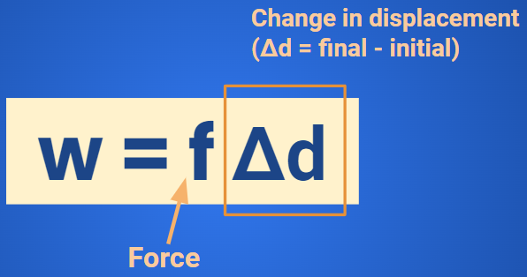
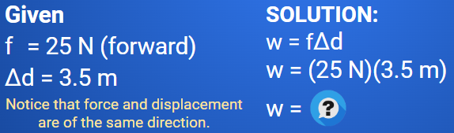
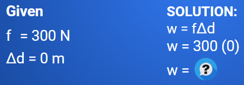

Work
Mechanical Work
FORMULA FOR WORK DONE (Constant Force)

Work is a scalar quantity.
The unit for work is N • m (newton meter)
ExampleHow much mechanical work does a store manager do on a grocery cart if she applies a force with a magnitude of 25 N in the forward direction and displaces the cart 3.5 m in the same direction?  |

FORMULA FOR WORK DONE(force and displacement have different directions)
In some cases, an object may experience a force in one direction while the object moves in a different direction.
The man is pulling the bag. Thus, the bag is experiencing a force in an diagonal. (arrow in the picture)

We only consider the horizontal component of the force in the equation since it is the only one that is of the same direction as the displacement.
ExampleWhat is the mechanical work done by a custodian on a vacuum cleaner if the custodian exerts an applied force of 50.0 N on the vacuum hose and the hose makes a 30.0° angle with the floor. The vacuum cleaner moves 3.00 m to the right on a level, flat surface. |

ExampleHow much mechanical work is done on a stationary car if a student pushing with a 300 N  |

Practice
Curtis pushes a bowl of cereal along a level counter a distance of 1.3 m. What is the net work done on the bowl if Curtis pushes the bowl with a force of 4.5 N and the force of
friction on the bowl is 2.8 N?